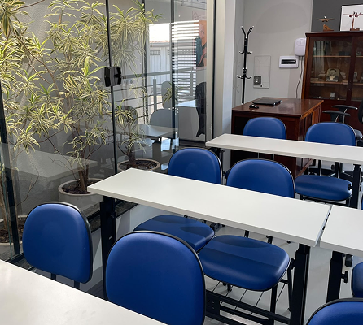

PROGRAMA DECOLA JOVEM
Se você está em busca da sua primeira oportunidade no mercado de trabalho ou já está trabalhando, mas quer dominar os desafios do dia a dia e se destacar na empresa, este é o seu lugar.
O DECOLA JOVEM oferece um conjunto de capacitações práticas que, somadas, dão o impulso que faltava para você construir uma carreira de sucesso.
Esse programa é oferecido pela ESCOLA PROFISSIONALIZANTE ZAFRA, a participação é gratuita e os educadores são voluntários, todos profissionais de mercado que atuam em diversas áreas, são empresários, gestores e professores.
(19) 99787-1600 - Realize sua inscrição
◄ CURRÍCULO ►
O que você vai aprender
O programa contém dez módulos, disponibilizados por meio de nove encontros presenciais (no período noturno, das 19 às 22hs) e um módulo a distância, totalizando uma carga horária de 35 horas.
1. Bastidores & Legislação
6. Metodologia e Gestão da qualidade
2. Ambiente de trabalho e habilidades
7. Análise de processos
3. Educação financeira & Projeto de vida
8. Segurança no trabalho
4. Liderança
9. Meio ambiente e sustentabilidade
5. Comunicação e Atendimento
10. Matemática, informática e metrologia (ONLINE)